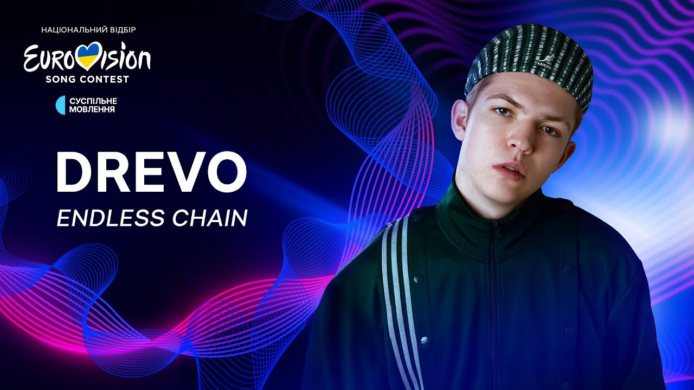
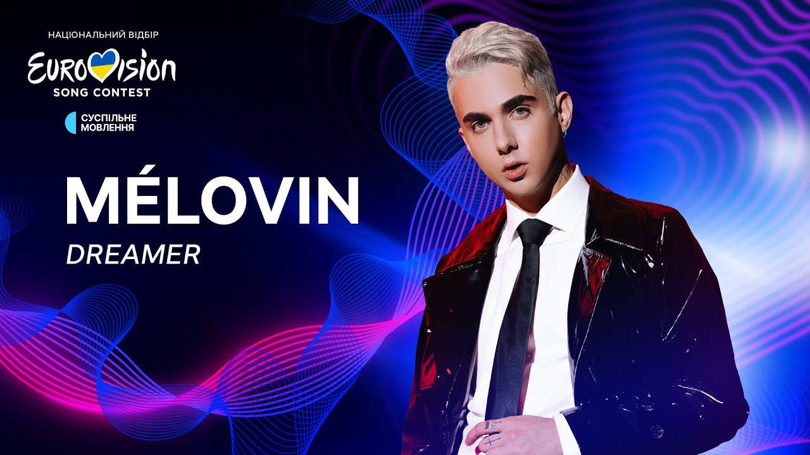

YAKTAK — псевдонім українського співака та автора пісень Ярослава Карпука.

"Я постарався зробити крутий, запальний трек. Зробив все можливе від себе і вклав всю свою душу і внутрішній вогонь. Я зробив такий хук, щоб пісня запам'ятовувалась одразу і вся Європа наспівувала її. В LaLaLa є справжня, щира українська енергія", — коментує YAKTAK.
ANKA — українська співачка та сонграйтерка, яка виконує пісні у стилі електро-поп-фольк.
Пісню "Палала" вона написана спеціально для участі у національному відборі на "Євробачення 2024". Як зауважує артистка, це історія про злети та падіння, про емоційні гойдалки, з якими зараз стикається кожний українець. Але додає, що після всіх випробувань завжди наступає світло.
21-річний співак Drevo (Максим Дерев'янчук) за дебютний рік зробив декілька успішних проєктів: "Самолітом" (на YouTube композиція зібрала понад 1 млн переглядів), "Ластівка" та "Завітавши в храм".
"Я хочу, щоб моя музика стала гімном для всіх, хто бореться та сподівається," — ділиться DREVO.
Співачка та авторка пісень Інґрет Костенко відома широкій публіці через участь у шоу "Х-Фактор" та "Голос країни".
"Оскільки мій тато та чоловік — професійні військові та дивляться у очі війни з 2014 року, я не можу стояти осторонь. Я ухвалила рішення вивчати свою жіночу силу: що я можу в цій ситуації, хто я як жінка?”, — ділиться співачка.
MÉLOVIN — співак, музикант, композитор, автор пісень та продюсер.
"Я хочу, щоб ця пісня була про вас, в ім'я вас і за вас. Хочу, щоб пісня Dreamer подарувала вам розуміння, що нарешті ви готові повернутися до свого власного мрійника, здійснювати свої мрії, маштабуватися і робити себе щасливими. Кому, як не вам?" – звертається до слухачів MÉLOVIN.